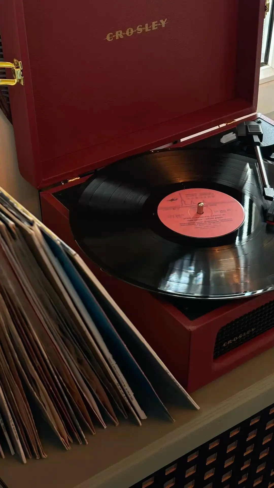
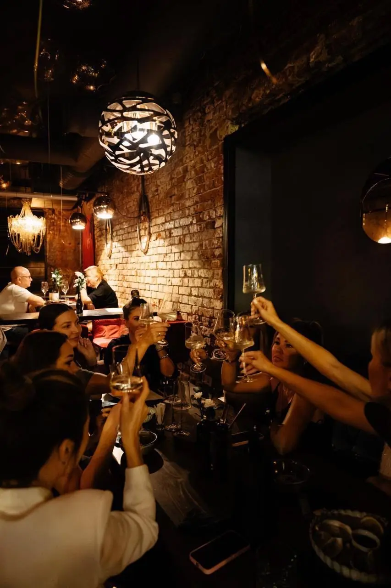

04вер
Голка й дим
Блюз · жива труба
Вініловий бар · крамниця платівок · Київ
Платівки без шафлу. Коктейлі без поспіху. 42 місця для тих, хто справді слухає.
01 / Осіння програма · вересень–листопад
Блюз · жива труба
Соул · фанк · диско
Джаз-фанк · рідкісні записи
Даунтемпо · електронний соул
Неосоул · повільний грув
Новий джаз · ламаний ритм

Маніфест
«Ми не вмикаємо добірку. Ми ставимо платівку — від першої доріжки до останньої.»
Без екранів над баром і випадкових треків. Тут музика має вагу, паузи й правильну гучність.
02 / Крамниця платівок
Невеликий каталог, який ми слухаємо самі. Усі платівки можна поставити за баром до покупки.

04 / Бронювання
Бронь тримаємо 20 хвилин. У п’ятницю та суботу депозит — 600 ₴ з гостя, повністю в рахунок бару.
Подарунковий сертифікат
На бар, вініл або квитки. Номінал від 1 000 ₴, діє 12 місяців.